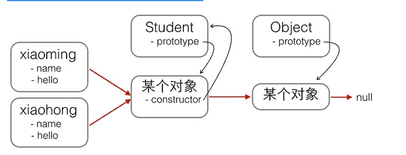
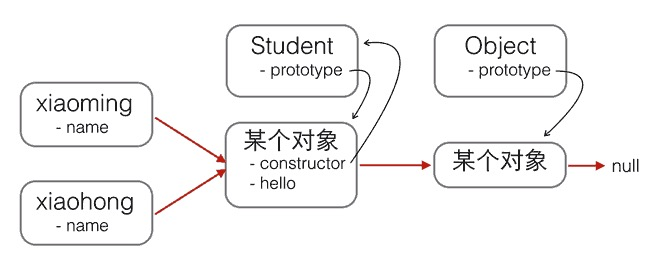

JavaScript对每个创建的对象都会设置一个原型，指向它的原型对象。
当我们用obj.xxx访问一个对象的属性时，JavaScript引擎先在当前对象上查找该属性
如果没有找到，就到其原型对象上找
如果还没有找到，就一直上溯到Object.prototype对象
最后，如果还没有找到，就只能返回undefined。
例如，创建一个Array对象：var arr = [1, 2, 3];
其原型链是：arr ----> Array.prototype ----> Object.prototype ----> null
Array.prototype定义了indexOf()、shift()等方法，因此你可以在所有的Array对象上直接调用这些方法。
当我们创建一个函数时：function foo(){return 0;}
函数也是一个对象，它的原型链是：foo ----> Function.prototype ----> Object.prototype ----> null
由于Function.prototype定义了apply()等方法，因此，所有函数都可以调用apply()方法。
很容易想到，如果原型链很长，那么访问一个对象的属性就会因为花更多的时间查找而变得更慢，因此要注意不要把原型链搞得太长。
除了直接用{ ... }创建一个对象外，JavaScript还可以用一种构造函数的方法来创建对象。它的用法是，先定义一个构造函数：
//构造函数
function Student(name) {
this.name = name;
this.hello = function () {
console.log('Hello,'+this.name+'!')
}
}
var xiaoming = new Student('小明');
//this都指向xiaoming这个对象
console.log(xiaoming.name);
console.log(xiaoming.hello());
可以用关键字new来调用这个函数，并返回一个对象
注意，如果不写new，这就是一个普通函数，它返回undefined。但是，如果写了new，它就变成了一个构造函数，它绑定的this指向新创建的对象，并默认返回this，也就是说，不需要在最后写return this;。
新创建的xiaoming的原型链是：xiaoming ----> Student.prototype ----> Object.prototype ----> null
也就是说，xiaoming的原型指向函数Student的原型。如果你又创建了xiaohong、xiaojun，那么这些对象的原型与xiaoming是一样的：
xiaoming ↘
xiaohong -→Student.prototype ----> Object.prototype ----> null
xiaojun ↗
用new Student()创建的对象还从原型上获得了一个constructor属性，它指向函数Student本身：
xiaoming.constructor === Student.prototype.constructor; // true
Student.prototype.constructor === Student; // true
Object.getPrototypeOf(xiaoming) === Student.prototype; // true
xiaoming instanceof Student; // true
看晕了吧？用一张图来表示这些乱七八糟的关系就是：
红色箭头是原型链。注意，Student.prototype指向的对象就是xiaoming、xiaohong的原型对象，这个原型对象自己还有个属性constructor，指向Student函数本身。
另外，函数Student恰好有个属性prototype指向xiaoming、xiaohong的原型对象，但是xiaoming、xiaohong这些对象可没有prototype这个属性，不过可以用__proto__这个非标准用法来查看。
现在我们就认为xiaoming、xiaohong这些对象“继承”自Student。
不过还有一个小问题，注意观察：
xiaoming.name; // '小明'
xiaohong.name; // '小红'
xiaoming.hello; // function: Student.hello()
xiaohong.hello; // function: Student.hello()
//xiaoming和xiaohong各自的hello是一个函数，但它们是两个不同的函数，虽然函数名称和代码都是相同的！
xiaoming.hello === xiaohong.hello; // false
如果我们通过new Student()创建了很多对象，这些对象的hello函数实际上只需要共享同一个函数就可以了，这样可以节省很多内存。
要让创建的对象共享一个hello函数，根据对象的属性查找原则，我们只要把hello函数移动到xiaoming、xiaohong这些对象共同的原型上就可以了，也就是Student.prototype
修改代码如下：
function Student(name) {
this.name = name;
}
Student.prototype.hello = function () {
alert('Hello, ' + this.name + '!');
};